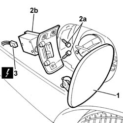
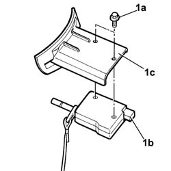

7025C40 Fuel filler flap control MOTOR - R.R. and check closing supply line
- Path
- Procedures > 70 FITTINGS > 7025 COMPARTMENT LIDS > 7025C various flaps (exterior) > 7025C40 Fuel filler flap control MOTOR - R.R. and check closing supply line
- Kind
- repair procedure (removal / refitting; the operation number is the code)
- Applies to
- all engines; all production periods
- Interactive page
- https://sloeber94.github.io/elrnDB-lThss/en/#/80260
Applies to: all engines; all production periods
 Removing
Removing
 Refitting
Refitting- Disconnect the negative battery terminal.
1. Open the fuel filler flap.
2. Undo the fixing bolts (2a) and remove the motor complete with bracket (2b) from the housing.
3. Disconnect the electrical connector.
 | Description | Connector |
|---|---|---|
3 | Fuel filler flap lock geared motor | N058 |

Applies to: all engines; all production periods
1. At the bench, undo the fixing bolts (1a) and separate the motor (1b) from the mounting bracket (1c).

Applies to: all engines; all production periods
Refitting
Removing- Assembly the motor and the mounting bracket and tighten the fixing bolts.
- Connect the electrical connector for the fuel flap motor complete with bracket.
| Description | Connector |
|---|---|---|
. | Fuel filler flap lock geared motor | N058 |
- Fit the fuel flap motor in the housing and secure it using the bolts.
- Close the fuel filler flap.
- Connect the negative battery terminal.